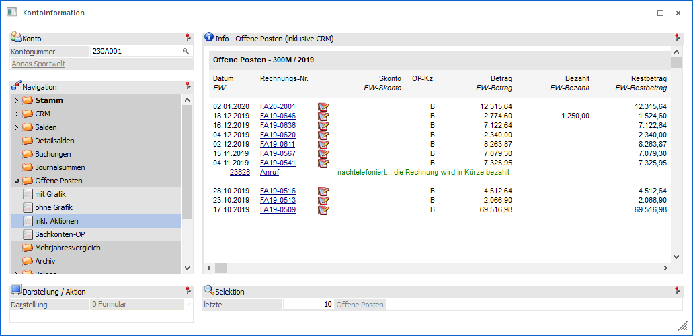
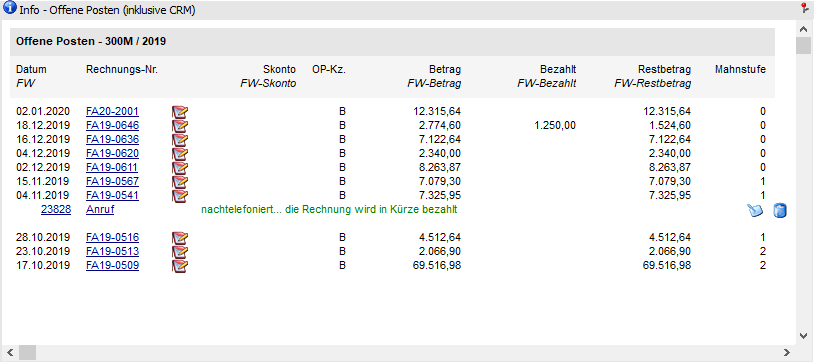
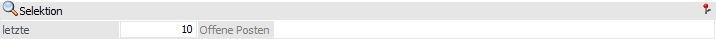

Kontoinformation - Bereich "Offene Posten" - Ansicht "inkl. Aktionen"
In der Ansicht "inkl. Aktionen" werden die OPs des Kontos dargestellt. Zusätzlich werden zu dem OP erfasste CRM Aktionen angezeigt (die Verknüpfung findet über die CRM-Felder "Kundenkonto" und "OP-Nummer" statt).
Hinweis zu CRM
Um CRM Aktionen zu erfassen, zu editieren oder zu löschen müssen folgende Voraussetzungen erfüllt werden:
ü Es muss eine gültige CRM-Lizenz vorhanden sein.
ü Der Benutzer muss ein CRM-Benutzer sein.
Hinweis für Hauptmandanten
Werden die Offenen Posten inkl. Aktionen in einem Mandanten mit Submandanten geöffnet, so werden nur die Daten des aktuell ausgewählten Mandanten ausgewertet.

Die Ansicht "inkl. Aktionen" besteht aus den folgenden Info-Elementen:
ü Info -Offene Posten (inklusive CRM)
ü Selektion
Info - Offene Posten (inklusive CRM)

An dieser Stelle werden die Offenen Posten inklusive der CRM Aktionen, gemäß der nachfolgenden Selektion, dargestellt. Durch Anklicken der Rechnungsnummer wird die Belegvorschau geöffnet. Sollte die Rechnung in der Belegverwaltung nicht mehr gefunden (z.B. weil sie manuell gebucht oder durch den Reorg entfernt wurde), so wird die Suche nach dieser Rechnung im Archiv (sofern vorhanden) fortgesetzt.
Ø CRM Aktion erfassen
Mit Hilfe dieses Buttons wird das Fenster "Neuer Fall" geöffnet, über welches CRM Aktionen zu den Offenen Posten erfasst werden können. Hierbei werden die CRM Felder "Kundenkonto" und "OP-Nummer" der CRM Aktion automatisch befüllt.
Ø  CRM-Fall bearbeiten
CRM-Fall bearbeiten
Durch Anwahl dieses Buttons kann ein angelegter CRM-Fall bearbeitet werden.
Ø  CRM-Fall löschen
CRM-Fall löschen
Mit Hilfe dieses Buttons kann der CRM-Fall gelöscht werden.
Selektion

Für die Darstellung der Anzeige steht folgender Punkt zur Verfügung, wobei die Einstellung für den Bereich "Offene Posten" übergreifend benutzerspezifisch gespeichert wird:
Ø letzte x Offene Posten
An dieser Stelle kann definiert werden, wie viele Offene Posten maximal angezeigt werden sollen.